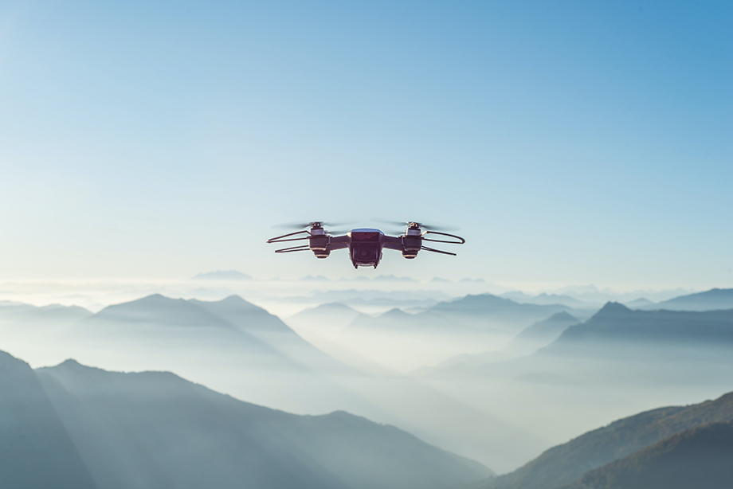

Toujours plus de drône dans le ciel
The battle station is heavily shielded and carries a firepower greater than half the star fleet. It's defenses are designed around a direct large-scale assault. A small one-man fighter should be able to penetrate the outer defense.
All your base are belong to us!
All wings report in. Red Ten standing by. Red Seven standing by. Red Three standing by. Red Six standing by. Red Nine standing by. Red Two standing by. Red Eleven standing by

Internet, c'était mieux avant
Yes. Our scout ships have reached Dantooine. They found the remains of a Rebel base, but they estimate that it has been deserted for some time. They are now conducting an extensive search of the surrounding systems.
En lire plus